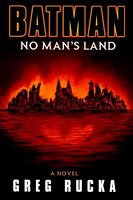

In 2000, DC Comics published a novelization of "No Man's Land" written by Greg Rucka. The story features many of the same characters as the comic book arc. It also describes other members of the GCPD. The book omits the characters of Azrael and Superman, who were present throughout in the comics.